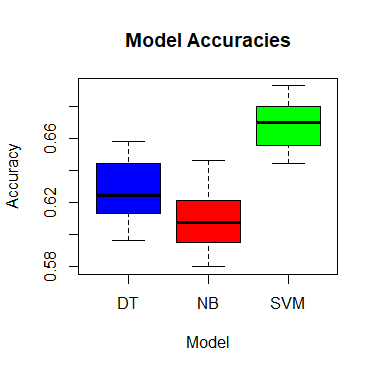
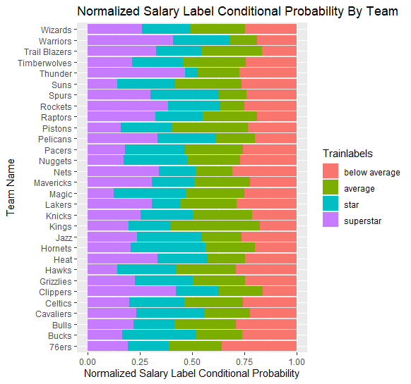

The NBA has resisted the transition to analytics driven decision making. However, NBA statistics do have ample value when it comes to thinking about player value. Using player statistics sheds light on what stats really matter, how relevant they are to salary decisions, and broader view information like roster construction variability throughout the league. Complementing these findings with text data makes for interesting insights into the fabric of the NBA.
With regard to salary predictions, current statistics struggle to accurately quantify player value. The various analytical methods used were able to predict salary to some extent, but never more than 70% overall. However, predicting superstars and below average players was doable to a much higher degree of accuracy (~80%). The best performing model for predicting NBA salaries was SVM's, specificall a radial SVM.

Despite the accuracy challenge, there were real insights to be had. The bottom and top tiers were consistently more predictable
than the middle tiers likely for multiple reasons. It is relatively easy to tell who are bad players and who are great players based on stats alone, but
middle tiers (those in the 50-90th percentile) seem to be distinguished by more than just statistics. Factors here can include roster construction,
chemistry needs, and positional needs, amongst other attributes.
Another pattern found is the relative importance of volume statistics vs efficiency statistics. In many of the analytical methods, the
important variables looked somewhat like this:
None of these variables, outside of efficiency (PER) take into account shooting efficiency stats like True shooting %, effective fg% or three point%. This result is surprising given the new hyper efficiency bent that has taken over the NBA in the last decade. A potential reason for this is the profound correlation between salary and playing time. Those who are paid more highly, play more minutes and although there is a general correlation between salary and efficiency as well, the association with volume is much stronger and more reliable as efficiency stats can be high with small sample sizes. The most important variables throughout the analysis seemed to be true shooting attempts, efficiency, experience, and 2k Ratings. The inclusion of 2k Ratings in particular was a large value add to the data and although it is used in video games, there is some real predictive value with this statistic. Also, given that some of the data points were missing and had to be approximated for this variable, a complete and accurate dataset would likely provide even more value. Going forward, 2k Ratings may be looked at more seriously.
There were interesting variations found between teams and positions regarding salary. It was established that different teams over the previous decade have moderately different approaches towards salary and roster construction, with some teams stockpiling stars and other teams creating more balanced rosters. In the graph below, each bar is stacked with 4 groups, but instead of each group representing the pure percentage of players rostered over the decade belonging to that category, it represents the conditional probability that a member of a given salary label is on that team, which is then compared to the probabilities for the other groups. In essence, the larger the bar, the more likely it is that a team has a high concentration of players belonging to that group. This way, the graph takes into account both roster construction from a team only perspective, as well as that teams roster compared to the rest of the league.
Using this chart, it can be seen that teams like the Rockets, Warriors, Clippers, and Thunder rostered a lot of superstars as well as a lot of below average players (likely to counterbalance the cap hit of the big contracts). Other teams like the Celtics, Jazz, and Bulls have a more balanced roster construction, with relatively equal amounts of players in each bin. Although not causal, it is worth noting that the teams who did win championships over this period (Heat, Mavericks, Spurs, Cavs, Warriors) all have relatively high amounts of superstars compared to the rest of the league and the rest of their roster. These types of players clearly play a role in winning when it matters.
The idea of superstars being intimately connected to championships was a pattern found throughout the text data analysis. The words found in the twitter analysis of relevance especially regarding superstars, allstars, and legends were words like "time", "finals", and "championships". These words, among others, showed that consistency and performance over time, rather than in just one season, was what truly separated the elite players from the rest, or even single season stars.
To put it succinctly, the combination of player statistics and text data can be effectively used to examine player value, if not predict player value with some degree of accuracy. It was discovered that volume statistics are more adept than efficiency stats with regard to predicting salary with true shooting attempts, PER, and 2k Ratings being the most predictive variables under a number of analytical methods. Additionally, superstar heavy roster construction gives teams a better chance at making deep playoff runs and winning championships.
The code used to create the visuals in this section is linked here.
Opportunities to improve this analysis are ample and present in nearly every aspect. First, regarding the data itself, findings from the text data regarding consistency and championship/playoff success could have improved the models. It is very likely, that consistent players and those who experienced greater playoff success command higher salaries (even if only from the locker room presence that a championship player brings). Inclusion of data for these phenomena could improve accuracy and predictability of salary.
Additionally, this analysis focused on a collection of data from 2012-2021, and was not treated as time series data in any way. Thus, there are opportunities to treat this data differently (such as a regression problem) that may provide better results. Also, using data from many years was expected to have a positive effect by providing more data from a sheer volume perspective, and also to help account for season to season variation in performance. However, this decision may have backfired and could potentially have smothered legitimate trends. For instance, if only 2019-2020 data was used, would three pointers made and % become more important variables given recent changes in the league? Possibly. Additionally, the analysis may have been better served if there was a more intense focus on players in their contract years. There was no accounting for this variable which may have changed nothing, but would have allowed for more nuanced analysis of relevant player decisions that happened in the past offseason.
Regarding the text data, more searches targeting characteristics of lower tier players would be interesting to examine, not only for the juxtaposition against elite tier players, but also to supplement analysis of that tier of player in a vacuum. Also, more text data in general would improve the ability to find meaningful connections within the data. This applies to both the record and text data, but is more pertinent to the text data given the findings of this analysis.